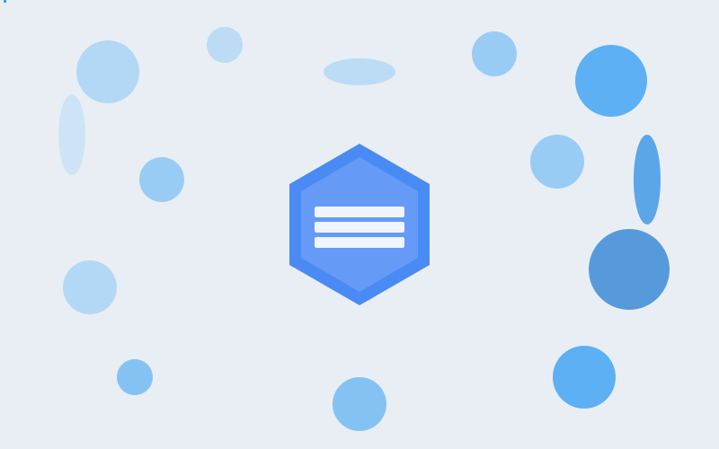
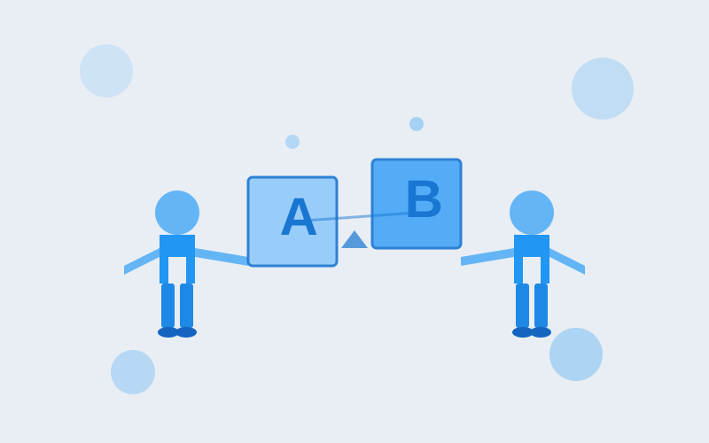
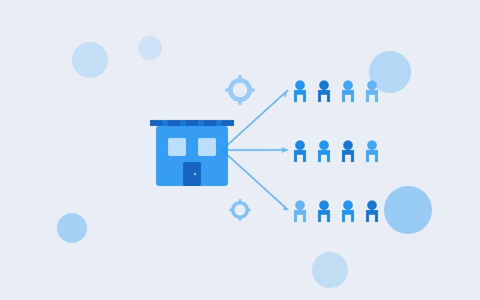
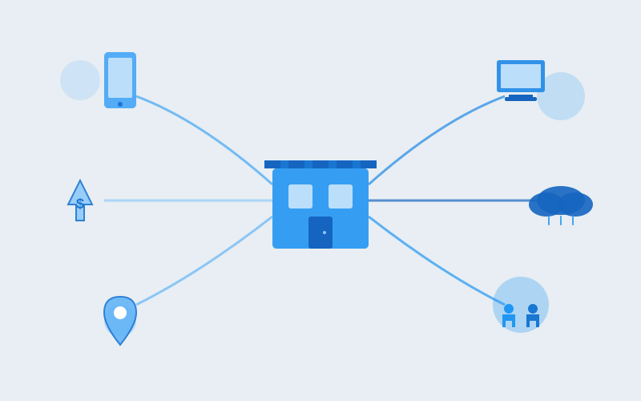

Data Science Manager with 7+ years of experience leading teams in Causal Inference and Personalization Analytics. Delivered $120M+ incremental revenue impact by scaling production-grade ML on Google Cloud Platform. Expert in mentoring scientists, Product Roadmap development, and building AI solutions for enterprise-level ROI.

Deployed causal ML uplift models to identify offer-sensitive visitors, delivering $55M incremental revenue through personalized incentive targeting at scale.

Built a simulation-driven Streamlit application deployed on OpenShift to automate A/B and multivariate test design, reducing test planning latency from days to minutes.

Led a team to architect an end-to-end labor optimization tool via Temporal Fusion Transformer, resulting in 18% reduction in understaffing and 12% reduction in overtime.

Architected a causal discovery framework across 1,100+ stores using Double Machine Learning, enabling $20M operational spend reallocation to high-conversion drivers.
Birla Institute of Technology & Science, Hyderabad
2013 - 2017
EXL Service · Bengaluru, India
Sep 2017 - Nov 2020 · 3 years
Purdue University
2021 - 2021
Kohl's Inc. · Dallas, TX
Jan 2022 - Dec 2025 · 4 years
Kohl's Inc. · Dallas, TX
Jan 2026 - Present